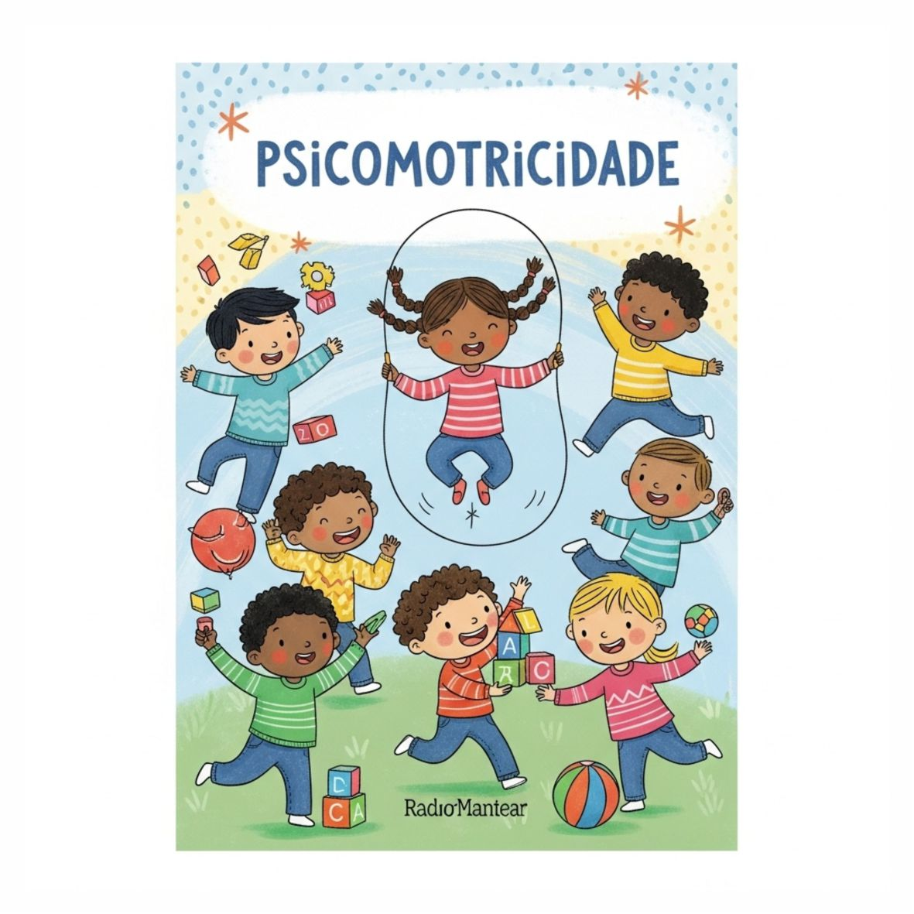

Nossa Coleção de Ebooks
Conhecimento especializado para pais, educadores e profissionais da saúde

Atividades Aquáticas
O que você vai aprender:
- Os benefícios das atividades aquáticas para o desenvolvimento infantil.
- Sugestões de jogos e brincadeiras para fazer na água com segurança.
- Como a água estimula a coordenação motora, o equilíbrio e a confiança.
- Dicas para criar um ambiente aquático seguro e divertido para as crianças.
- A importância da supervisão e do uso de equipamentos de segurança.
R$ 34,90
Avulso
GRÁTIS
Assinantes

Brincadeiras Ativas
O que você vai aprender:
- A importância das brincadeiras ativas para o desenvolvimento motor e social.
- Sugestões de brincadeiras que estimulam o movimento, coordenação e criatividade.
- Como promover a atividade física de forma divertida e envolvente.
- Benefícios da brincadeira ao ar livre e em diferentes ambientes.
- Dicas para garantir a segurança e o engajamento das crianças.
R$ 29,90
Avulso
GRÁTIS
Assinantes

Coordenação Motora
O que você vai aprender:
- A fundamental importância da coordenação motora no desenvolvimento infantil.
- Atividades práticas para aprimorar a coordenação motora grossa e fina.
- Como a coordenação motora impacta habilidades como escrita, equilíbrio e esportes.
- Dicas para criar um ambiente que estimule o movimento e a exploração.
- O papel do brincar livre e estruturado no desenvolvimento da coordenação.
R$ 38,90
Avulso
GRÁTIS
Assinantes

Equilíbrio e Postura
O que você vai aprender:
- A importância do equilíbrio e da postura para o desenvolvimento motor.
- Atividades lúdicas para fortalecer o core e melhorar a estabilidade.
- Como identificar e corrigir hábitos posturais inadequados em crianças.
- A relação entre equilíbrio, postura e outras habilidades motoras.
- Dicas para criar um ambiente que incentive o movimento e a boa postura.
R$ 26,90
Avulso
GRÁTIS
Assinantes

Esportes na Infância
O que você vai aprender:
- A importância da prática esportiva para o crescimento e bem-estar infantil.
- Como escolher o esporte ideal para cada faixa etária e perfil de criança.
- Os benefícios dos esportes no desenvolvimento físico, mental e social.
- Dicas para incentivar a participação e manter o interesse das crianças.
- Aprender sobre a importância do fair play e do trabalho em equipe.
R$ 45,90
Avulso
GRÁTIS
Assinantes

Fisioterapia Pediátrica
O que você vai aprender:
- Os fundamentos da fisioterapia pediátrica e sua importância no desenvolvimento.
- Exercícios e técnicas para estimular o desenvolvimento motor em crianças.
- Como identificar sinais de alerta e buscar apoio profissional adequado.
- A importância da intervenção precoce em diversas condições pediátricas.
- Dicas para adaptar o ambiente e materiais para terapias em casa.
R$ 33,90
Avulso
GRÁTIS
Assinantes

Marcos Motores
O que você vai aprender:
- Quais são os marcos do desenvolvimento motor em cada fase da infância.
- Como identificar se o desenvolvimento do seu filho está dentro do esperado.
- Atividades e brincadeiras para estimular cada marco motor.
- Sinais de alerta para buscar orientação profissional.
- A importância da observação e do ambiente para o desenvolvimento motor saudável.
R$ 31,90
Avulso
GRÁTIS
Assinantes

Psicomotricidade
O que você vai aprender:
- A relação entre movimento, emoção e aprendizado na psicomotricidade.
- Atividades lúdicas para desenvolver a coordenação, equilíbrio e lateralidade.
- Como a psicomotricidade auxilia no desenvolvimento da autonomia e da criatividade.
- A importância do brincar e da experimentação para o desenvolvimento integral.
- Estratégias para identificar e apoiar crianças com dificuldades psicomotoras.
R$ 28,90
Avulso
GRÁTIS
Assinantes